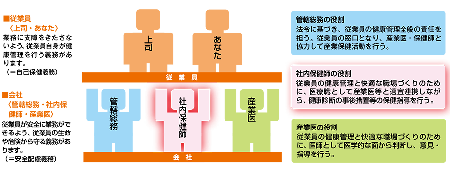

「働き方改革」という言葉が少しずつ浸透し、フレキシブルな個人の働き方や就労への意識も徐々に多様化してきていますが、日本国内では、まだまだ長時間労働などに起因する健康面の課題があります。
また、日本は世界1位の長寿国であり、総人口に占める65歳以上人口の割合(高齢化率)は27.3％です。就業者総数に占める高齢者(65歳以上)は11.4%で、12年連続で増加*しており、「健康長寿社会」の実現に向けて、就労世代の従業員のヘルスケアに注力することが、各企業にも求められています。
LIXILでは、「グループ企業行動憲章」の中に「働くすべての人の安全を優先し、労働災害のない働きやすい職場を実現するとともに、心とからだの健康づくりを推進します。」と明記し、従業員の安全と健康を守る取り組みを実施しています。
*出典:総務省統計局_統計トピックスNO.97
LIXILは、LIXIL健康保険組合と連携し、2015年から会社・健保の相互の資源や強みを生かした協働の活動「LIXIL WELLNESS」に取り組んでいます。
従業員の健康保持増進を支援するため、以下の活動を積極的に展開しています。
これらの活動を実践し、「健康で安心して働ける職場づくり」を実現していくために、健康管理のプロフェッショナルである社内保健師が、産業医と管轄総務のパイプ役となって連携しながら、従業員の健康サポート体制を構築しています。社内保健師は、健康な従業員にはその生活を維持向上できるように、健康に不安やリスクを抱える従業員には、それを改善するための支援を行っています。

健康保険組合と共同で、積極的に運動奨励し、従業員の自発的な運動習慣を促進するプログラムとして、「LIXILウォーキングラリー」を2016年から年2回定期的に展開しています。
2017年春実施の「奥の細道を歩こう」には約2,000名が参加し、個人とチームで60日間のウォーキングに取り組みました。日々の歩数を専用のWEBサイトに入力することで、歌人 松尾芭蕉が旅した奥の細道を北上し、ゴール松島を目指します。個人では、8000 歩以上の達成率80% (48日間/60日間)を、チームでは、チーム内参加者の延べ達成率を競いあいます。
専用WEBサイトでは、相互に励ましあい、共感できるよう、参加者が日々のウォーキングの様子をツイートしたり写真投稿できるページを設けています。そのほかにも、ウォーキングの効果や継続するためのコツなどを紹介しています。
| 実施期間 | 2017年5月15日-7月13日 |
|---|---|
| 対象者 | LIXIL健康保険組合加入事業所に勤務する正社員・嘱託・パート（出向受入含む） |
| 達成基準 | 個人目標：全60日間のうち、8000歩以上の日が80％以上(48日間/60日間) チーム成績：参加者の延べ達成率（参加者の8000歩達成延べ日数／参加者×60日） |
疾病の予防や早期発見には、従業員自身が充分な知識を持つことも大切です。
LIXILでは、 事業所単位でのメンタルヘルスセミナーを実施することで、従業員一人ひとりがメンタルヘルスへの正しい知識を持って予防に取り組むよう働きかけています。自分自身や部下のメンタルヘルスについて「こころとからだの健康相談窓口」で、社内保健師に電話やメールで個別相談することができ、専門的なサポートを受けられます。管理職を対象にしたメンタルヘルスマネジメント教育も定期的に実施し、早期発見・早期治療ができる職場環境づくりに努めています。
また、心疾患・脳疾患など、生命に危険を及ぼすだけでなく医療費も高額となる疾病の予防のために、全従業員の健診結果のうち「糖尿病」や「高血圧症」などの生活習慣病で、特に重症度が高い重点対象者については、確実に医療機関受診へとつなげ、2016年(44名)・2017年(50名)ともに受診率100%を達成しました。
さらに、疾病による休業者については、「職場復帰プログラム」に基づいた復職支援を行っています。これは、休業中のケアから復職後の支援（フォローアップ）まで、それぞれの心身の状態に合わせて対応できるプログラムで、産業医・保健師が専門的なサポートをしながら職場復帰を支援します。
全国でメンタルヘルスケアの専門的新体制として、精神科産業医を複数拠点に配置しています。
これらの生活習慣病などの疾病の重症化防止活動、メンタルヘルスケア、運動奨励といった健康保持増進の施策が総合的に高く評価され、経済産業省・日本健康会議による健康経営企業の認定制度「大規模法人部門（ホワイト500）」の「健康経営優良法人」に2年連続で認定されました。
労働者の健康保持増進は一企業の活動にとどまらず、働く人たち全員の課題です。
LIXILは健康管理のノウハウを共有・活用することにより、会員企業全体の健康増進活動の有効性・活用性を向上することを目的とする「KENKO企業会」をテルモ、第一生命、帝人、NTTドコモら13社と業種業界を超えて2015年に共同で設立し、2017年6月現在、約60社に拡大しています。日本再興戦略における「健康寿命の延伸」を軸として、健康増進のリーディングカンパニー集団をめざして活動し、64万人を超える会員企業の従業員の健康に資するだけでなく、日本全体の健康寿命の延伸に貢献していきたいと考えています。
労働安全衛生に関する取り組みは、グループ全体の重要イシューに位置づけ、グローバルで報告しています。